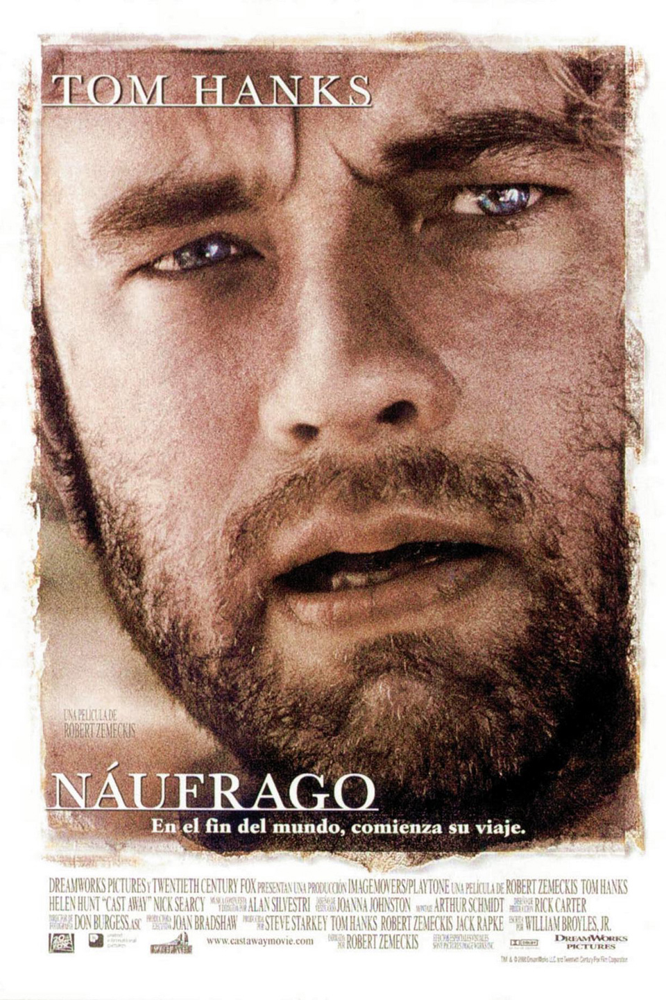

|
Náufrago (título original en inglés: Cast Away) es una película dirigida por el cineasta
estadounidense Robert Zemeckis, protagonizada por Tom Hanks y estrenada en 2000. Su trama
describe la supervivencia de Chuck Noland, un empleado de FedEx, en una isla del océano
Pacífico durante varios años.
El guionista William Broyles, Jr. redactó el libreto basándose en una idea original concebida
por Hanks en 1994. El rodaje se llevó a cabo principalmente en la isla de Monuriki, al
norte de Fiyi, y se prolongó por más de un año debido a que el equipo de producción pausó
las grabaciones por ocho meses con tal de que Hanks bajara de peso acorde a los
requerimientos de su personaje.
|

|